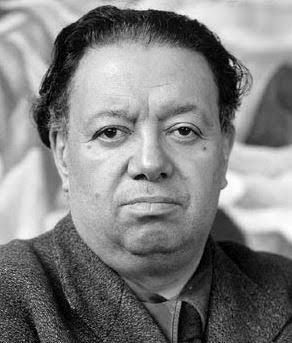
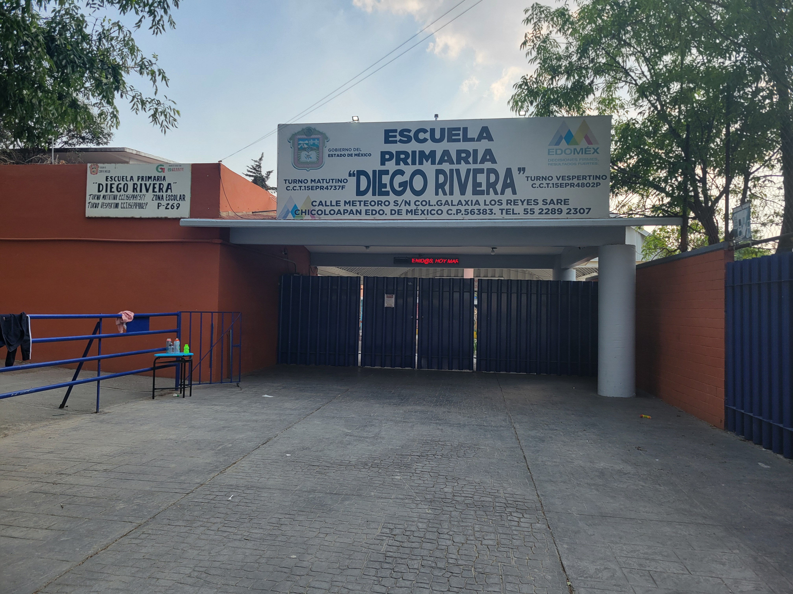

¿Quién es Diego Rivera?
Diego Rivera fue un destacado pintor y muralista mexicano, reconocido mundialmente por sus murales de gran escala que retratan la historia, la política y la vida social de México. Nació el 8 de diciembre de 1886 en Guanajuato y murió el 24 de noviembre de 1957 en la Ciudad de México.
La Escuela Primaria Diego Rivera de San Vicente Chicoloapan fue fundada el 15 de agosto de 1995.
Es una institución educativa pública ubicada en la colonia Ciudad Galaxia Los Reyes, Chicoloapan de Juárez, Estado de México. Se ha consolidado como un espacio de formación integral para niñas y niños de nivel básico, destacando por su compromiso con la educación y el desarrollo académico de la comunidad.
Funciona en turno matutino y está registrada oficialmente con la Clave de Centro de Trabajo 15EPR4737F. Cuenta con más de 18 aulas distribuidas en varios edificios y acceso a internet para integrar herramientas digitales al aprendizaje.
Los grupos tienen un promedio de 29 alumnos por aula. A pesar de un ligero nivel de saturación, se mantiene un ambiente educativo dinámico y participativo.
El nombre de la escuela, inspirado en Diego Rivera, refleja su visión cultural y educativa, basada en valores de identidad, historia y arte.
